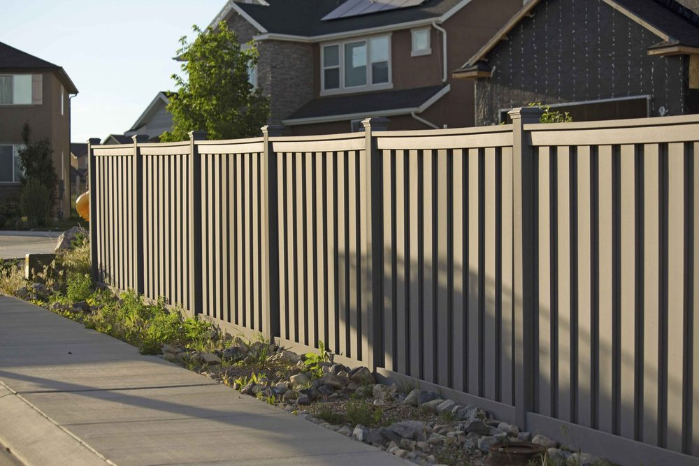

In This Guide
- Mobile and manufactured home lots are often small, so the right fence balances privacy, cost, upkeep, and how much light and airflow you want to keep.
- Vinyl and wood give privacy, chain link keeps pets in and costs less, and aluminum or wrought iron adds a finished look.
- Check park, HOA, and local rules first, and set posts deep enough to handle Gulf Coast wind.
- Portable panels work for short-term needs, but a permanent fence is the better answer for daily privacy.
A mobile home usually sits on a smaller lot than a traditional house, with neighbors close by and less room to work with. That changes what a fence has to do. Privacy, pet safety, and curb appeal all matter, and the budget tends to matter even more.
The team at Big Easy Fence put this guide together for owners of mobile and manufactured homes. It covers the fence styles that suit these lots, what each one asks of you in upkeep, and what to check before a single post goes in the ground.
What Makes a Mobile Home Lot Different
Manufactured homes are built in a factory and set on a site, and they now come in many sizes and styles. The lots they sit on share a few traits that shape the fence decision.
- Tighter space. A fence line close to the home leaves little room for swinging gates or bulky posts, so slim profiles and sliding or narrow gates help.
- Close neighbors. Privacy is often the main reason people fence a mobile home lot, especially in a park where homes sit side by side.
- Rules beyond your control. Many parks and communities have their own limits on fence height, style, and placement.
- Wind exposure. A lighter structure on a flat lot feels every gust, and a fence that catches wind adds to the load on its own posts.
Privacy Fence Options
If you want to block the view from the street or the next lot, you are choosing between vinyl and wood. Both work well. The real difference is how much time you want to spend on upkeep.
Vinyl Privacy Fences
Vinyl is strong, weather-resistant, and easy to maintain. It does not need paint or sealer, and a rinse with a hose handles most dirt. It also comes in several colors and panel styles, so you can match it to the trim on your home. For an owner who would rather not repair or refinish anything, vinyl is the easy pick.
Wood Privacy Fences
A wood fence has a warm, classic look and can be stained to suit almost any home. It also needs more attention. In Louisiana humidity, wood has to be sealed and checked for rot and insects, or it will age quickly. If you like the look and you are willing to keep up with it, wood is a fine choice.

See-Through and Decorative Options
Not every yard needs a solid wall. If your goal is to keep pets in, mark the property line, or dress up the front of the lot, an open fence does the job and keeps light and airflow moving.
Chain Link
Chain link is affordable, durable, and quick to install. You can see through it, which suits a small lot that would feel boxed in by solid panels. It offers little privacy on its own, but privacy slats or climbing vines fix that.
Aluminum and Wrought Iron
Decorative fencing gives a mobile home a finished, permanent look. Aluminum is light and does not rust, so it copes well with wet weather. Wrought iron is heavier and very strong, but it needs periodic painting to keep rust away. Both come in simple or ornate designs and both let you see through them. You can browse more on our metal fence page.
Picket Fences
A picket fence in wood or vinyl adds the classic front-yard look without blocking the view. It marks the boundary, gives small children and pets a defined space, and costs less than a full privacy build.
Comparing Your Options at a Glance
| Fence Type | Privacy | Upkeep | Best For |
|---|---|---|---|
| Vinyl Privacy | High | Low | Owners who want no repainting or sealing |
| Wood Privacy | High | High | A natural look you can stain any color |
| Chain Link | Low, or moderate with slats | Low | Pets, budget projects, and open views |
| Aluminum | Low | Low | Front yards and a clean, finished edge |
| Wrought Iron | Low | Moderate | A strong, formal look |
| Picket | Low | Depends on material | A classic front-yard boundary |
What About a Mobile or Portable Fence?
A portable fence is a separate thing from a fence for a mobile home. These are freestanding panels, usually metal or plastic, that move from place to place. They suit construction areas, events, and short-term needs, and some come with wheels or a gate.
They can help with a temporary job, like keeping a new puppy in one part of the yard. For daily privacy and a lasting boundary, a permanent fence set in the ground is the better fit.
Before You Build: Rules, Wind, and Setbacks
A few checks up front save real money later.
- Read the park or HOA rules. Ask about height limits, approved materials, and whether you need written approval before you build.
- Confirm the property line. Know exactly where your lot ends, and check for utility lines and easements before any digging.
- Plan for wind. Set posts deep and secure, and remember that solid panels catch more wind than open designs.
- Think about upkeep. Be honest about how much time you will spend on staining, painting, or cleaning, and choose the material to match.
Ready-made panels can make a simple fence a reasonable weekend project. Gates, uneven ground, and long runs go faster and last longer when a fence contractor handles them.
Picking the Right Fence for Your Home
The best fence for a mobile home comes down to what matters most to you. If privacy leads, look at vinyl or wood. If pets and price lead, chain link is hard to beat. If curb appeal leads, aluminum or wrought iron gives the cleanest finish. Browse our fence types to compare styles side by side.
Whichever way you lean, match the fence to your lot, your weather, and the rules where you live. When you are ready to talk through your options, our residential fencing team can go over your options and give you an estimate.
Ready to Fence Your Mobile Home Lot?
Tell us about your lot, your budget, and what the fence needs to do. We will help you narrow the options and put together an estimate.